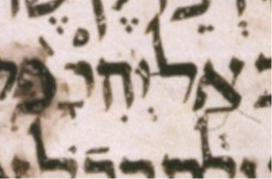

| bcv (link to tanach.us) | je50:29 |
| MPK | ◌ָ◌֙ |
| qere-context | אַל־יְהִי־לָהּ֙ |
| qere | לָהּ֙ |
| at issue | הּ |
| at issue English | added a mapiq to he |
| folio col line | 274A 2 24 |
The MPK has no letter to carry a mapiq for the qere’s ה. The MPK (points on no letters) is qamats and pashta.